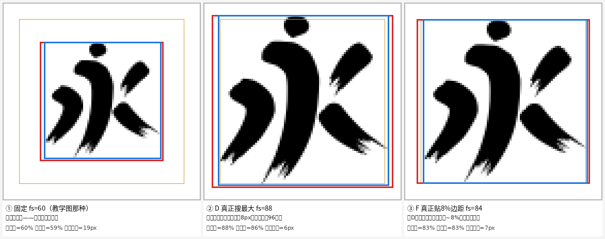
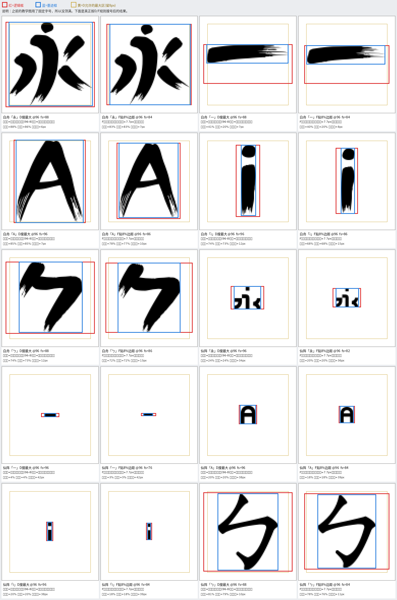
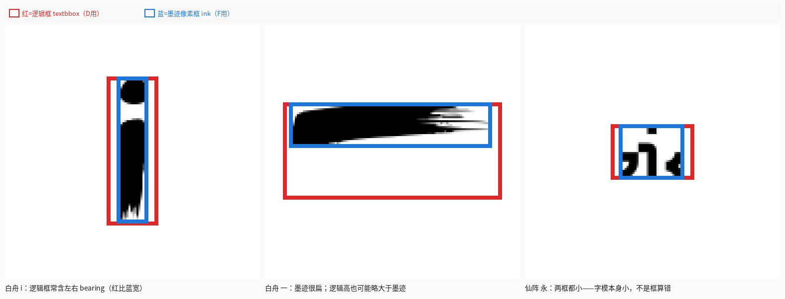
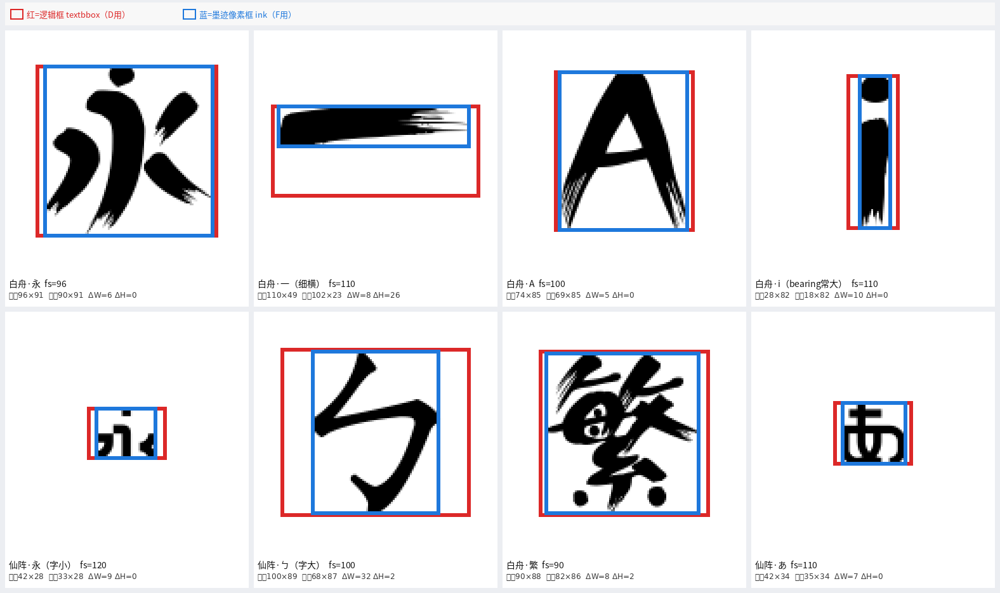

逻辑框 vs 墨迹像素框
红=逻辑框 textbbox（D用来卡字号）·
蓝=墨迹像素框（F用来量边距）·
黄= D 允许的最大区（96−8）
为啥看起来没顶满 96？
- 更早的教学图用了固定字号，不是搜最大。
- 即便 D「搜最大」，也故意留 8px，红框最多贴到黄线，不会贴画布外框。
- F 更不是最大化，目标是墨迹边距 ≈ 8%（约 7.7px），所以通常比 D 更空。
- 像仙阵「永」：字模本身小，搜到最大号后墨迹仍只占一小块——这不是没搜满。



